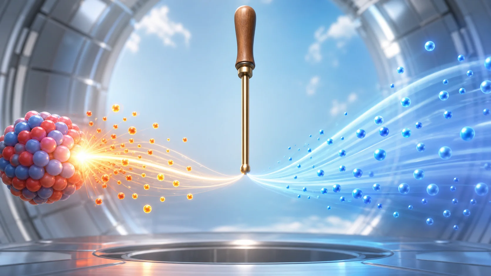
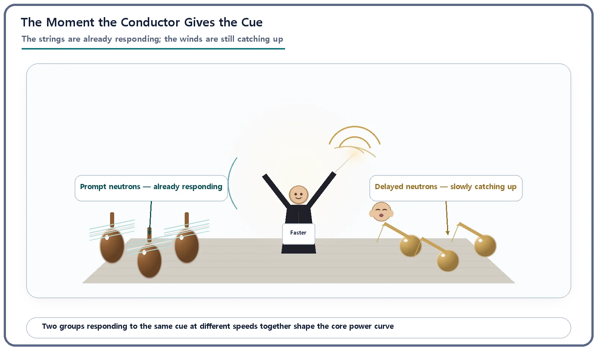
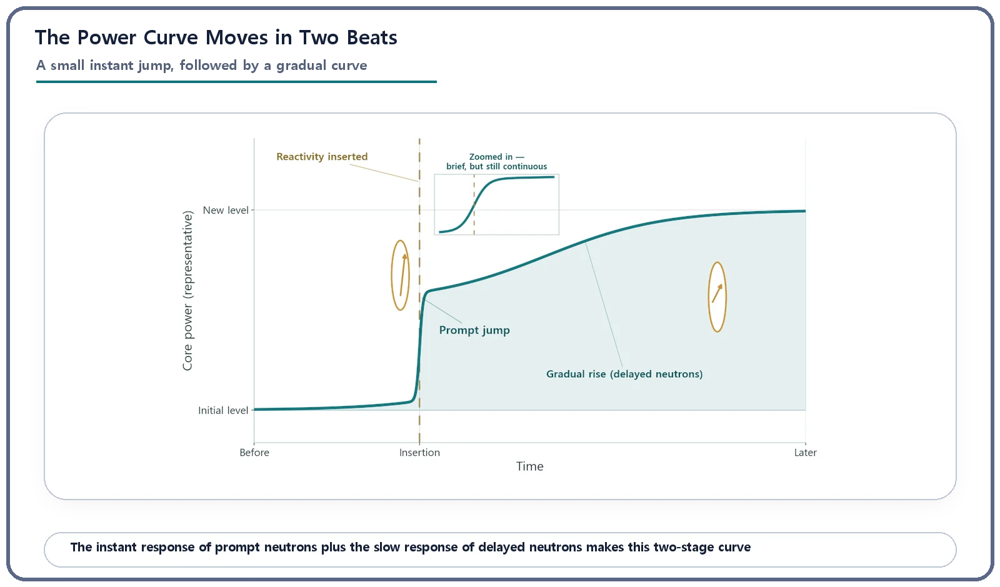

Reactor Kinetics & Reactivity · 109
When the Conductor Changes the Tempo — The Prompt Jump and the Slow Rise That Follows
Reactor power after a reactivity step is neither a step nor one smooth curve: a quick leap, then an unhurried climb.

When reactivity is inserted into a reactor, power first makes a small, almost instant leap, the prompt jump, driven by prompt neutrons, and then rises gradually as delayed neutrons from precursors arrive. The jump is about β/(β − ρ), or 1/(1 − x) for x dollars: about 11% for $0.1, double for $0.5, tenfold for $0.9. The slow rise afterward is what makes real-time control possible.
A step, or a smooth curve?
Add a little reactivity to a reactor, and what shape does the power curve take? Does it leap up like a step and stay there, or glide upward along one smooth curve? To answer, we need to bring together pieces we have met one at a time: reactivity, prompt and delayed neutrons, and the point kinetics equations. Here they all work at once.
The conductor's cue doesn't change the whole orchestra in one beat
Imagine an orchestra in mid-performance. The conductor signals a slightly faster tempo. The strings, following the score with their fingertips, respond almost instantly. Some wind players need a moment to catch a breath and prepare the next bar. So at the instant of the cue, the overall tempo has already picked up a little, thanks to the strings, but it is not yet the full new tempo. Over the next few seconds the winds join in, and the whole orchestra settles smoothly into the new tempo.
A reactor responds in exactly these two stages. At the moment reactivity is inserted (pulling a control rod out slightly or lowering the coolant's boron concentration, any action that tips the core off its critical balance), the prompt neutrons, most of the neutrons from fission, react within a very short time and nudge core power up a little. They are the strings. Then the delayed neutrons, released after a lag as certain fission products (the precursors) decay, keep pushing power up over seconds to tens of seconds. They are the winds. Together they give the real shape of the power curve on reactor instruments.

Why exactly two stages? Time scales orders of magnitude apart
The key is that prompt and delayed neutrons respond on completely different orders of time. The neutron generation time, from one generation's birth to the next generation's fissions, is roughly one hundred-thousandth to one ten-thousandth of a second in a thermal reactor: effectively instant. Precursors, however, must first undergo radioactive decay, which takes from under a second to tens of seconds.
So at the moment of insertion, only the prompt neutrons find a new balance, almost instantly, pushing power up, while the precursor stock barely changes. This first leap, the prompt jump, is set by the prompt neutrons alone. After that, the leisurely precursors keep releasing delayed neutrons, raising power slowly but steadily, at a pace governed not by the generation time but by precursor decay.
With only prompt neutrons, the whole change would be over in a blink, leaving no operator or control system time to respond. With only delayed neutrons (impossible in reality), you would see one gentle curve. Real reactors have both, hence the distinctive two-stage curve: a small instant leap, then an unhurried rise. That combination is what lets people and control systems keep up in real time.
How big is the prompt jump? A simple ratio
If reactivity ρ is inserted as a step within the normal range below the delayed-neutron fraction β (0 < ρ < β), power jumps almost instantly by this ratio:
n₁ / n₀ ≈ β / (β − ρ)
n₀ is the power just before insertion; n₁ is the power right after the jump, before the gentle rise gets going. In dollars (reactivity divided by the delayed-neutron fraction, the scale on which prompt critical is exactly $1), a reactivity of x dollars (0 < x < 1) gives a jump of 1/(1 − x):
Insert $0.1: 1/0.9 ≈ 1.11, an instant jump of about 11%.
Insert $0.5: 1/0.5 = 2, power instantly doubles.
Insert $0.9: 1/0.1 = 10, power instantly jumps tenfold.
As x approaches $1 (prompt critical), the ratio grows without limit: the same conclusion as before, now in numbers. In real operation, the size and speed of reactivity changes are limited by multiple layers so that an insertion that large never happens.
A negative insertion (inserting a control rod further, for instance) follows the same formula: power drops slightly at once, then keeps falling slowly. Here we focus on rising power.

| Reactivity inserted | Prompt-jump ratio 1/(1 − x) | Immediate power change |
|---|---|---|
| $0.1 | 1/0.9 ≈ 1.11 | about +11% |
| $0.5 | 1/0.5 = 2 | doubles |
| $0.9 | 1/0.1 = 10 | tenfold |
After the jump
Power doesn't stop after the prompt jump; it keeps rising slowly along with the precursor concentration. How fast (say, how many seconds to double) depends jointly on the size of the reactivity and the properties of the precursors, and a follow-up concept exists to calculate it precisely. What matters here is that this speed is set by slow precursor decay, so the rise unfolds slowly enough for operators to watch and decide on the next action. If reactivity is held, the stretch after the jump looks more and more like a smooth exponential curve.
Easy mix-ups
Prompt jump vs. prompt critical. The prompt jump always appears, even far below prompt critical; in fact the approximation only holds below it. Prompt criticality is a different matter: the threshold where prompt neutrons alone can sustain the reaction.
Prompt jump vs. reactivity. Reactivity is the cause; the prompt jump is the result in power. The same reactivity gives a different jump in a core with a different delayed-neutron fraction.
A step, or a single smooth curve? Neither. Power does not snap to a new value and stay there: the jump is only a relatively small part of the change, and power keeps moving while reactivity is held. Nor is it one smooth exponential: the real curve always opens with a small visible leap.
What this means for operation and design
When an operator withdraws control rods little by little, the power indication shows a small prompt jump after each move, then a slow rise. That this later stretch is slow enough to judge from the instruments is the most fundamental reason a reactor can be controlled in real time.
Designers limit the speed and size of reactivity changes possible in normal operation (rod withdrawal speed, boron dilution rate and so on) by multiple layers, so that the jump plus the slow rise stays well within safety margins. And when safety analysis examines unexpected reactivity insertions, calculating both the jump and the speed of the rise to confirm the core stays within safe limits is one of the basic procedures of reactor kinetics analysis.
Key takeaways
After reactivity is inserted, power combines a small instant leap from prompt neutrons (the prompt jump) with a gradual rise from delayed neutrons (precursors); it is neither a step nor one smooth curve.
Like an orchestra: the strings answer the cue at once, the winds follow, and the tempo changes smoothly.
The jump is about n₁/n₀ ≈ β/(β − ρ), or 1/(1 − x) in dollars, growing without limit as reactivity approaches prompt critical ($1).
The slow rise is governed by precursor decay, and that slowness lets people and control systems keep up.